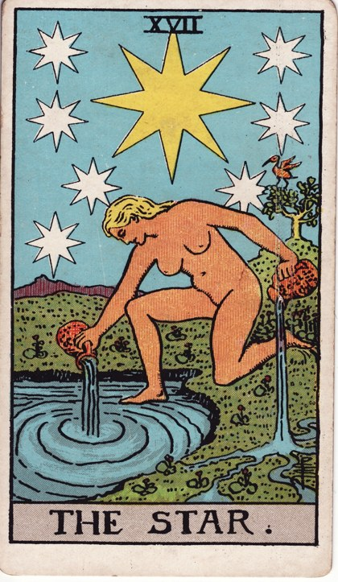
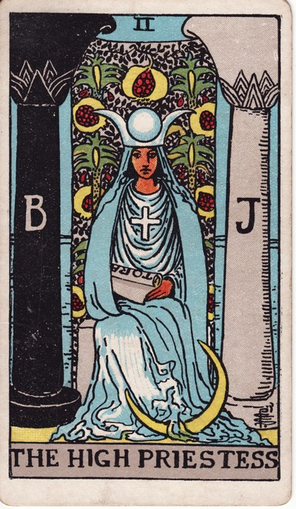
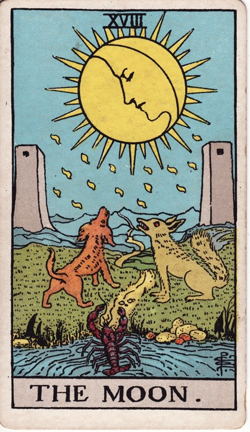
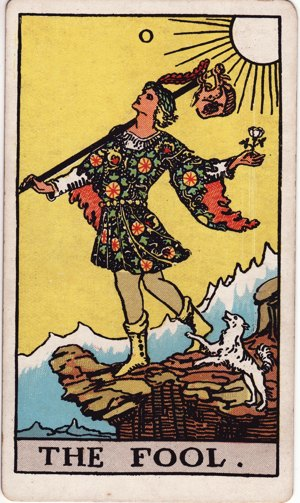
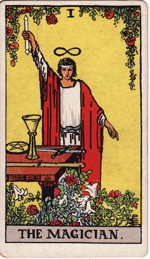
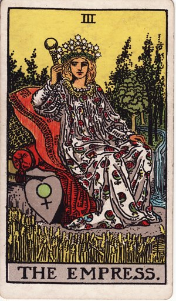
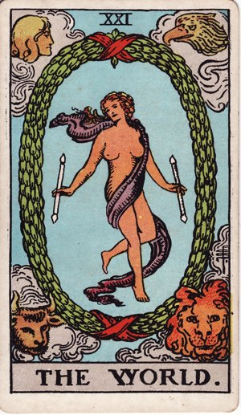

4 слайда · тёмно-синий с золотом + вариант в светло-голубом · дизайн Янита Войт
Таро — древняя система символов, которая помогает заглянуть вглубь себя, прояснить ситуацию и найти ответы на важные вопросы.
Это не магия, а инструмент самопознания через язык образов и архетипов. Каждая карта — своего рода зеркало.



Пять модулей — от первого знакомства до самостоятельной практики и раскладов.




Каждый день вытягивайте одну карту и записывайте, что она для вас значит.
Ведите дневник трактовок и совпадений — так образы карт закрепляются на практике, а не в теории.